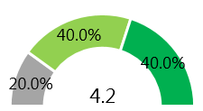
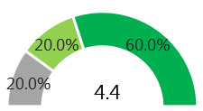
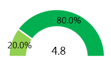
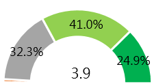
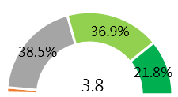
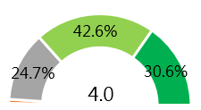

Domain Name Service
A total of five domain name registrars have given their responses. Three of them do not have an independent department responsible for domain name registration and instead assigned the task to the concerned operating departments.
The usage rate of the primary service “used the domain registration system” is 100%. “Read the TWNIC annual report, e-newsletter or others,” “contacted customer service via email, phone, or others” and “participated in TWNIC conferences” are also 100% used.
All the services used are rated positively. 80% of the interviewees are satisfied with “used the domain registration system,” “read the TWNIC annual report, e-newsletter or others” and “contacted customer service via email, phone or others” respectively. The reasons why the service is considered to be good are the website is easy to use, convenient, and informative so could solve the problems from users.
B7.Which services provided by TWNIC has your company/organization participated in or used in the last year? (MA)
B8.How satisfied are you with the services listed above based on your experience with them?(SA)
Figure 1 Service usage and satisfaction
According to the evaluation of the overall satisfaction of the domain name registrars toward TWNIC, both “service quality” and “technical support” are rated positively by 80% of the registrars, with an average score of 4.4. The average score of “technical support” is 4.2.
In addition to the overall satisfaction, the rating indicators for trust and value perceptions are included. Both “I trust TWNIC” and “services provided by TWNIC are valuable to my business” are rated positively by the registrars, with an average score of 4.8.
Service Quality

Technical Support

I trust TWNIC
Service Provided by TWNIC
are valuavle to my business
A1.On the whole, how satisfied are you with TWNIC in the following respects?(SA)
A2.Based on your interactions with TWNIC, how far do you agree with the following statements?(SA)
n=5
Figure 2 Evaluation of satisfaction and value perceptions
“Technical support,” “policy support,” “market support” and “price schemes” have a usage rate of 80%, respectively. Except for “market support” and “price schemes,” the interviewees are either “satisfied” or “very satisfied” with the remaining services. This shows that the usage rate and satisfaction are both high.
Overall, the value perception for every service is between 60% to 80%. The highest percentage of “very satisfied” appears in the cases of “policy support” and “customer support.”The reasons for the high ratings include a complete policy system and good communication. Examples of comments from the interviewees:
“The different needs and opinions of the registrars will be taken into account for the evaluation of communication and policy formulation.”
“Fast response, easy to have a meeting.”
“Focus on two-way communication and updated related information in a timely manner.”
The reasons why the interviewees think the services are “valuable” include good service contents and performance, e.g., availability of fast and comprehensive supports, as shown in the following comments:
“Localization, zero differentiation and internationalization.”
“Comprehensive services for domain names are available.”
“Effective assistance can be provided to the registrars in promoting their services.”
The rate of participation of the domain name registrars in conferences is 100%, while 80% of them have participated in training courses. This shows a high participation rate for both events.
G1.Have you or members of your company/organization participated in a conference organized by TWNIC in the past year?(SA)
G2.Have you or members of your company/organization participated in TWNIC training courses in the past year?(SA)
G4.What would you like to be provided at TWNIC conferences or training courses? (You may select more than one.)(MA)
Figure 3 Participation in events and expectations and preferences
The domain name registrars have, however, shown no preferences for training courses and forms and only hoped to add more topics such as industrial issues. Examples of comments from the interviewees:
“DNSs related to network technologies, diversification of domain value-added services, analysis of market status, etc.”
With respect to the frequency of attention from registrants to the Internet issues published by TWNIC, 60% of the registrants “always” pay attention and 40% of them “often” do so. The highest percentage of the registrants consider “work requirements” (100%) to be the reason for attention.
H1.How often do you take note of the information TWNIC publishes?(SA)
n=5
Figure 4 Frequency of attention
H2.Why do you take note of the information TWNIC publishes? (MA)
n=5
Figure 5 Reasons for attention
H3.What do you hope to see in the Internet-related news and intelligence provided by TWNIC in future? (MA)
n=5
Figure 6 Issues expected
Market awareness of the .tw/.台灣 country code top-level domain Difference in registration of top-level domain names: 80% of the interviewees consider market awareness to be high, and they think the reason for such awareness is that the service is already quite popular in the domestic market. Some interviewees have pointed out that good awareness domestically does not necessarily mean it will also be the same internationally.
C4.From your perspective as an authorized registrar, please compare .tw/.台灣 with other domains in your registration business, to help us better understand the differences between domain names.(SA)
Figure 7 Difference in registration of top-level domain names
The domain name registrars consider the first priority for improvement of the country code top-level domain of Taiwan (.tw/.台灣) to be “market awareness” (80.0%).It has been recommended that market awareness be enhanced through all forms of marketing or events. There are two kinds of recommendations for prices, namely creating high values and setting lower prices. The recommendations for registration policies are not consistent in their directions.
F1.From your company/organization's perspective, which aspects of the .tw/.台灣 country code top-level domain should be prioritized for improvement? Choose the three most important options. Please rank them from 1st to 3rd, with the 1st being the highest priority for improvement. (SA)
n=5
Figure 8 Ranking of priorities for improvement to the country code top-level domains of Taiwan (.tw/.台灣)
The total valid sample size is 1774. According to the usage of domain name registration, 73.6% registrants are for business, corporate and 39.5% for personal uses. The most frequently used service is the primary service “used the domain registration system” (62.7%), with no difference between the corporate and personal registrants. The service with the second highest usage rate is “DNS analytics/Whois” (45.6%) which has been used by a higher percentage of personal registrants. It is similar to the result of “browse the official website or blog” and both are services with a higher percentage of personal registrants. Conversely, “contacted customer service via email, phone, or others” has been used by a higher percentage of corporate registrants
B8.Which services provided by TWNIC has your company/organization used or participated in during the past year? (MA)
Figure 9 Service usage
The satisfaction for “used the domain registration system” which has the highest usage rate, is 70.5%*. This is a moderate result, i.e., the average value of satisfaction. 81.1% and 75% of the interviewees are satisfied with “participated in TWNIC training” and “participated in TWNIC conferences” respectively, which have the lowest and second lowest usage rates. Such results are in contrast to their usage rates. This shows that even though there are fewer participants, satisfaction with training courses and conferences is higher.
B9.How satisfied are you with the services listed above based on your experience with them?(SA)
*：Satisfaction means the total percenctage of "Satisfied" and "Very unsatisfied"
Figure 10 Service satisfaction
According to evaluation of the overall satisfaction of the domain name registrants toward TWNIC, both “service quality” and “technical support” are rated positively by over half of the registrars. 65.8% of the registrants are satisfied with the “service quality” provided by TWNIC, with an average score of 3.9. The satisfaction for “technical support” is 58.7%, with an average score of 3.8. According to evaluation of the satisfaction of the “corporate domain name registrants” and “personal domain name registrants”, the result is the same as that of the above-mentioned satisfaction for the services used, showing a better score for the satisfaction of the “corporate domain name registrants”. This indicates their satisfaction is higher than that of personal registrants.
In addition to the overall satisfaction, the rating indicators for trust and value perceptions are included. 73.2% of the interviewees think “I trust TWNIC”, and 70% of them consider that “services provided by TWNIC are valuable to my business”. The average scores of both are 4.0 and 3.9 respectively, slightly higher than those of their satisfaction. The result of this indicator is the same as that of satisfaction, with the “corporate domain name registrants” showing better trust and value perceptions, while the percentage of “agree” is higher than that in the case of “personal domain name registrants”.
Service Quality
Technical Support
I trust TWNIC
Services Provided by TWNIC
are valuable to my business
A1.On the whole, how satisfied are you with TWNIC in the following respects?(SA)
A2.Based on your interactions with TWNIC, how far do you agree with the following statements?(SA)
n=1774
Figure 11 Evaluation of satisfaction and value perceptions
With respect to the services using [.tw/.台灣 domain], the service “website set-up” has the highest usage rate of 71.1%, followed by “e-mail” (41.7%). The usage rate of each of the remaining services is lower than 40%. There is a slight difference between the services used by the “corporate domain name registrants” and “personal domain name registrants”. The percentage of the corporate registrants using either “e-mail” or “integrated marketing” is at least 5% higher than that of the personal registrants.
The registrants who have used services with [.tw/.台灣 domain] were then asked about the status of support. The lowest percentage of registrants in need of support appears in the services of “website set-up” and “e-mail”, which have the highest usage rates. The highest percentage of registrants in need of support appears in the case of “web hosting” whose percentage of “always receive effective support” (43.0%) is however higher than that of “do not receive effective support for some problems.” This indicates that whenever there is a need for support, assistance can always be received to completely manage it.
The rates of participation of the domain name registrants in conferences and training courses are both lower than 5%, being 4.2% and 3.1%, respectively. There are no significant differences between the participation rates of corporate and personal registrants. Reasons for non-participation include“Didn't know about the event or course”, and over sixty percent of registrants think their event expectations is “Upload videos for future reference” 。
G5_1.Do you have any preferences on methods or time period of training courses?(SA)
G5.What preferences do you have for training courses? (MA)
Figure 12 Events Expectations and preferences
12.5% of the domain name registrants have indicated that they have preferred training courses and forms, including the organization of online training. The expectations for topics are primarily focused on cybersecurity. The interviewees wish to add the following issues or information:
“Cybersecurity - Hacking, network security, network defense”
“Internet news - Internet trends, industrial analysis”
“Domain names - New domain names, domain marketing, security of domain names, protection of domain names”
“Other - Integrated marketing, SEO”
With respect to the frequency of attention from registrants to the Internet issues published by TWNIC, 40.7% of the registrants “sometimes” pay attention, and 33.9% of them “rarely” do so. The highest percentage of the reasons for attention appears in “to keep up with Internet news” (65.3%). Regarding the issues expected in the future, 51.6% of the interviewees think there should be “more varied perspectives” and “more active publicity or advocacy”. This shows that the registrants have expectations for information contents and marketing.
H1.How often do you take note of the information TWNIC publishes?(SA)
n=1774
Figure 13 Frequency of attention
H2.Why do you take note of the information TWNIC publishes?(MA)
n=1774
Figure 14 Reasons for attention
H3.What do you hope to see in the Internet-related news and intelligence provided by TWNIC in future? (MA)
n=1774
Figure 15 Issues expected
Over half of the registrants consider the first priority for improvement of the country code top-level domain of Taiwan (.tw/.台灣) to be “market awareness” (50.2%), followed by “integrated services” (29.9%).
F1.From your company/organization's perspective, which aspects of the .tw/.台灣 country code top-level domain should be prioritized for improvement? Choose the three most important options. Please rank them from 1st to 3rd, with the 1st being the highest priority for improvement. (SA)
n=1774
Figure 16 Ranking of priorities for improvement to the country code top-level domains of Taiwan (.tw/.台灣)
Recommendations of Market awareness:
“Expand international awareness/Make the country code top-level domain (.tw/.台灣) known internationally”, “Increase exposure/Organize more marketing events”,“Promote advantages”
Recommendations of Integrated services:
“Comprehensive/Integrated services”, “One-page website, simple interface”,“intuitive operation Availability of one-stop service”
Recommendations of Registration policies:
“Regulations of registration strategies”, “Protection of registered personal information”, “Optimization of the registration process”